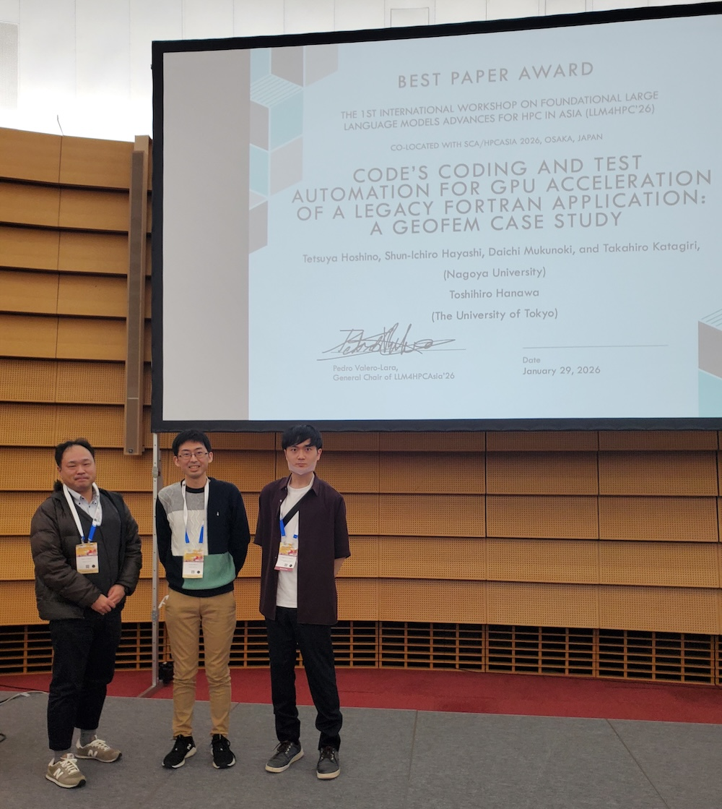

Workshop on LLM-Driven Code Generation and Automation for HPC and Scientific Computing（日仏合同）
LLMを活用したHPCコード生成・科学計算自動化に関する日仏合同ワークショップ。2026年7月6日（月）13:30〜、フランス・パリ ソルボンヌ大学LIP6研究所にて開催。参加無料（要登録）。
名古屋大学 片桐・星野研究室
高性能計算（HPC）分野における、生成AIによるコード自動生成、自動チューニング、混合精度計算、大規模シミュレーションを柱に、名古屋大学情報基盤センターを拠点として最先端スーパーコンピュータの性能を最大限に引き出す計算科学とコンピュータサイエンスの研究を推進しています。
LLMを活用したHPCコード生成・科学計算自動化に関する日仏合同ワークショップ。2026年7月6日（月）13:30〜、フランス・パリ ソルボンヌ大学LIP6研究所にて開催。参加無料（要登録）。
阪口修吾, 星野哲也, 河合直聡, 椋木大地, 片桐孝洋, ICTCG法の計算プログラムのGPU移植を対象としたコード生成AIの比較, 情報処理学会 第88回全国大会, 2026年3月.
Tetsuya Hoshino, Shun-Ichiro Hayashi, Daichi Mukunoki, Takahiro Katagiri and Toshihiro Hanawa による GeoFEM 事例研究論文が Best Paper Award を受賞。

片桐・星野研究室の研究室紹介スライドです。
林俊一郎, 椋木大地, 星野哲也, 片桐孝洋, HPC-GENIE: High-Performance Computing with Generative Neural Intelligence for Execution, xSIG 2025, ポスター発表, 2025年8月.